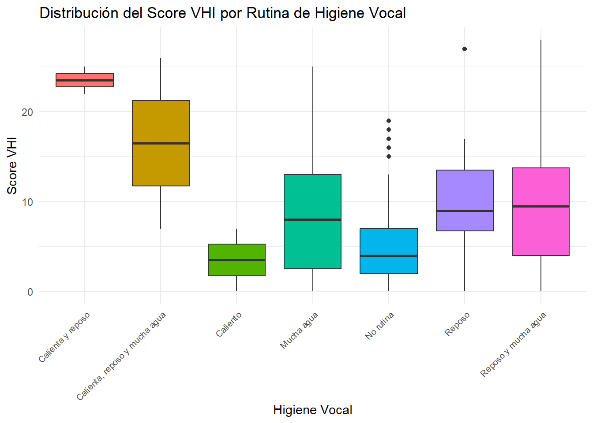

Rows: 185
Columns: 37
$ ID <int> 1, 2, 3, 4, 5, 6, 7, 8, 9, 10, 11, 12, 13, 14…
$ Importancia_voz <int> 10, 10, 10, 10, 10, 10, 9, 9, 10, 10, 9, 10, …
$ Sexo <chr> "Femení", "Femení", "Masculí", "Femení", "Fem…
$ Lugar_trabajo <chr> "Palma, Llucmajor, Algaida, Santa Eugènia, Ma…
$ Cuerpo_docente <chr> "Formació Professional", "Educació Secundària…
$ Edad <chr> "Entre 36 i 50", "Entre 36 i 50", "Entre 36 i…
$ Actividas_fisica <chr> "Més de 150 min. per setmana", "Més de 150 mi…
$ Importancia_deporte <int> 10, 10, 10, 8, 10, 10, 10, 7, 10, 10, 7, 9, 7…
$ Calidad_sueño <chr> "Dorm bé i em despert descansat", "Dorm bé pe…
$ Cafe <chr> "Diàriament", "Ocasionalment", "Diàriament", …
$ Tabaco <chr> "Diariament", "No", "No", "Anteriorment (exfu…
$ Alcohol <chr> "Ocasionalment", "Ocasionalment", "Setmanalme…
$ Bebida_gas <chr> "Mai", "Ocasionalment", "Diàriament", "Ocasio…
$ Dieta_saludable <int> 8, 6, 9, 6, 10, 10, 8, 8, 8, 8, 9, 9, 8, 7, 7…
$ Diagnostico <chr> "Cap de les esmentades anteriorment", "Cap de…
$ Patologia <chr> "", "", "", "", "Asma, al·lergia", "", "", ""…
$ Diagnostico_especialista <chr> "No", "Si", "No", "Si", "No", "Si", "No", "No…
$ Sintomas <chr> "Mucositat", "Fatiga vocal", "Veu ronca, esca…
$ Operacion <chr> "No", "No", "No", "No", "No", "No", "No", "No…
$ Tiempo_alteracion <chr> "No tenc cap alteració de la veu.", "Va comen…
$ Baja_voz <chr> "No, mai he estat de baixa per un problema de…
$ Baja_larga <chr> "", "El curs escolar passat. Una setmana senc…
$ Problema_curso22_23 <chr> "No", "Si", "Si", "No", "Si", "Si", "Si", "No…
$ Formacion_voz <chr> "Si, vaig fer un curs fa temps", "No, mai he …
$ Medicacion <chr> "Aspirina i antiinflamatoris no esteroideus",…
$ Higiene_vocal <chr> "No seguesc cap rutina per a la veu", "No seg…
$ Actividades <chr> "No faig cap activitat amb exigència vocal ex…
$ No_me_ecuchan <chr> "Mai", "Mai", "Mai", "Gairebé sempre", "Sempr…
$ No_me_escuchan_ruido <chr> "Mai", "A vegades", "Gairebé sempre", "Gaireb…
$ Alteracion_vida_social <chr> "Mai", "A vegades", "A vegades", "Gairebé mai…
$ Desplazado_conversacion <chr> "Mai", "Mai", "Mai", "Gairebé mai", "A vegade…
$ Rendimiento_laboral <chr> "Mai", "A vegades", "Gairebé mai", "Mai", "Ga…
$ Tensar_producir_voz <chr> "Mai", "A vegades", "Mai", "Mai", "A vegades"…
$ Calidad_imprevisible <chr> "Mai", "Mai", "Mai", "Mai", "Gairebé sempre",…
$ Me_molesta <chr> "Mai", "Mai", "Mai", "Mai", "Gairebé sempre",…
$ Minusvalia <chr> "Mai", "Mai", "Mai", "Mai", "Gairebé sempre",…
$ Gente_pregunta <chr> "Mai", "Mai", "Mai", "Mai", "Gairebé sempre",…Síntomas vocales en profesores
20582- Análisis de Datos para el GMAT
Grupo escuderia_ferrrari: Álvaro Velasco Sobrino, Carlos Bayes Liébana, Miquel Rivas Vanrell
Lectura y limpieza de los datos
Leemos los datos del fichero “Salut_Vocal_anonimizada.csv” y cambiamos los nombres de las variables.
Observamos que hay 185 respuestas y 37 variables. Vamos a limpiar los nombres de las variables y a convertir las variables categóricas en factores, a excepción de las variables “importancia_voz”, “importancia_deporte” y “dieta_saludable” que las dejamos como variables cuantitativas discretas.
Rows: 185
Columns: 37
$ id <fct> 1, 2, 3, 4, 5, 6, 7, 8, 9, 10, 11, 12, 13, 14…
$ importancia_voz <int> 10, 10, 10, 10, 10, 10, 9, 9, 10, 10, 9, 10, …
$ sexo <fct> Femení, Femení, Masculí, Femení, Femení, Feme…
$ lugar_trabajo <fct> "Palma, Llucmajor, Algaida, Santa Eugènia, Ma…
$ cuerpo_docente <fct> "Formació Professional", "Educació Secundària…
$ edad <fct> Entre 36 i 50, Entre 36 i 50, Entre 36 i 50, …
$ actividas_fisica <fct> Més de 150 min. per setmana, Més de 150 min. …
$ importancia_deporte <int> 10, 10, 10, 8, 10, 10, 10, 7, 10, 10, 7, 9, 7…
$ calidad_sueno <fct> Dorm bé i em despert descansat, Dorm bé però …
$ cafe <fct> Diàriament, Ocasionalment, Diàriament, Diària…
$ tabaco <fct> Diariament, No, No, Anteriorment (exfumador),…
$ alcohol <fct> Ocasionalment, Ocasionalment, Setmanalment, S…
$ bebida_gas <fct> Mai, Ocasionalment, Diàriament, Ocasionalment…
$ dieta_saludable <int> 8, 6, 9, 6, 10, 10, 8, 8, 8, 8, 9, 9, 8, 7, 7…
$ diagnostico <fct> "Cap de les esmentades anteriorment", "Cap de…
$ patologia <fct> "", "", "", "", "Asma, al·lergia", "", "", ""…
$ diagnostico_especialista <fct> No, Si, No, Si, No, Si, No, No, Si, No, No, N…
$ sintomas <fct> "Mucositat", "Fatiga vocal", "Veu ronca, esca…
$ operacion <fct> No, No, No, No, No, No, No, No, Si, No, No, N…
$ tiempo_alteracion <fct> No tenc cap alteració de la veu., Va començar…
$ baja_voz <fct> "No, mai he estat de baixa per un problema de…
$ baja_larga <fct> "", "El curs escolar passat. Una setmana senc…
$ problema_curso22_23 <fct> No, Si, Si, No, Si, Si, Si, No, No, No, No, N…
$ formacion_voz <fct> "Si, vaig fer un curs fa temps", "No, mai he …
$ medicacion <fct> "Aspirina i antiinflamatoris no esteroideus",…
$ higiene_vocal <fct> "No seguesc cap rutina per a la veu", "No seg…
$ actividades <fct> "No faig cap activitat amb exigència vocal ex…
$ no_me_ecuchan <fct> Mai, Mai, Mai, Gairebé sempre, Sempre, Gaireb…
$ no_me_escuchan_ruido <fct> Mai, A vegades, Gairebé sempre, Gairebé sempr…
$ alteracion_vida_social <fct> Mai, A vegades, A vegades, Gairebé mai, Gaire…
$ desplazado_conversacion <fct> Mai, Mai, Mai, Gairebé mai, A vegades, Mai, M…
$ rendimiento_laboral <fct> Mai, A vegades, Gairebé mai, Mai, Gairebé sem…
$ tensar_producir_voz <fct> Mai, A vegades, Mai, Mai, A vegades, A vegade…
$ calidad_imprevisible <fct> Mai, Mai, Mai, Mai, Gairebé sempre, A vegades…
$ me_molesta <fct> Mai, Mai, Mai, Mai, Gairebé sempre, Mai, Gair…
$ minusvalia <fct> Mai, Mai, Mai, Mai, Gairebé sempre, Mai, A ve…
$ gente_pregunta <fct> Mai, Mai, Mai, Mai, Gairebé sempre, A vegades…Ahora, para calcular el índice de calidad de voz (VHI), vamos a seleccionar las variables desde la 28 a la 37 para convertirlas en cuantitativas discretas y a sumarlas para obtener el índice VIH.
Rows: 185
Columns: 11
$ no_me_ecuchan <dbl> 0, 0, 0, 3, 4, 3, 2, 0, 1, 1, 0, 0, 1, 0, 1, 0…
$ no_me_escuchan_ruido <dbl> 0, 2, 3, 3, 1, 3, 1, 0, 2, 1, 0, 2, 3, 1, 2, 0…
$ alteracion_vida_social <dbl> 0, 2, 2, 1, 3, 1, 2, 0, 1, 1, 0, 0, 0, 1, 0, 0…
$ desplazado_conversacion <dbl> 0, 0, 0, 1, 2, 0, 0, 0, 0, 1, 0, 0, 0, 0, 0, 0…
$ rendimiento_laboral <dbl> 0, 2, 1, 0, 3, 2, 3, 1, 0, 1, 0, 0, 1, 1, 1, 0…
$ tensar_producir_voz <dbl> 0, 2, 0, 0, 2, 2, 2, 1, 1, 1, 0, 0, 2, 2, 1, 0…
$ calidad_imprevisible <dbl> 0, 0, 0, 0, 3, 2, 1, 1, 1, 1, 0, 0, 1, 0, 1, 0…
$ me_molesta <dbl> 0, 0, 0, 0, 3, 0, 1, 1, 2, 0, 1, 0, 0, 1, 1, 0…
$ minusvalia <dbl> 0, 0, 0, 0, 3, 0, 2, 0, 0, 0, 0, 0, 0, 0, 1, 0…
$ gente_pregunta <dbl> 0, 0, 0, 0, 3, 2, 0, 0, 2, 0, 0, 0, 0, 0, 1, 0…
$ VHI <dbl> 0, 8, 6, 8, 27, 15, 14, 4, 10, 7, 1, 2, 8, 6, …Por último, vamos a añadir la variable VHI al dataframe original y a eliminar las variables de la 28 a la 37.
Rows: 185
Columns: 27
$ id <fct> 1, 2, 3, 4, 5, 6, 7, 8, 9, 10, 11, 12, 13, 14…
$ importancia_voz <int> 10, 10, 10, 10, 10, 10, 9, 9, 10, 10, 9, 10, …
$ sexo <fct> Femení, Femení, Masculí, Femení, Femení, Feme…
$ lugar_trabajo <fct> "Palma, Llucmajor, Algaida, Santa Eugènia, Ma…
$ cuerpo_docente <fct> "Formació Professional", "Educació Secundària…
$ edad <fct> Entre 36 i 50, Entre 36 i 50, Entre 36 i 50, …
$ actividas_fisica <fct> Més de 150 min. per setmana, Més de 150 min. …
$ importancia_deporte <int> 10, 10, 10, 8, 10, 10, 10, 7, 10, 10, 7, 9, 7…
$ calidad_sueno <fct> Dorm bé i em despert descansat, Dorm bé però …
$ cafe <fct> Diàriament, Ocasionalment, Diàriament, Diària…
$ tabaco <fct> Diariament, No, No, Anteriorment (exfumador),…
$ alcohol <fct> Ocasionalment, Ocasionalment, Setmanalment, S…
$ bebida_gas <fct> Mai, Ocasionalment, Diàriament, Ocasionalment…
$ dieta_saludable <int> 8, 6, 9, 6, 10, 10, 8, 8, 8, 8, 9, 9, 8, 7, 7…
$ diagnostico <fct> "Cap de les esmentades anteriorment", "Cap de…
$ patologia <fct> "", "", "", "", "Asma, al·lergia", "", "", ""…
$ diagnostico_especialista <fct> No, Si, No, Si, No, Si, No, No, Si, No, No, N…
$ sintomas <fct> "Mucositat", "Fatiga vocal", "Veu ronca, esca…
$ operacion <fct> No, No, No, No, No, No, No, No, Si, No, No, N…
$ tiempo_alteracion <fct> No tenc cap alteració de la veu., Va començar…
$ baja_voz <fct> "No, mai he estat de baixa per un problema de…
$ baja_larga <fct> "", "El curs escolar passat. Una setmana senc…
$ problema_curso22_23 <fct> No, Si, Si, No, Si, Si, Si, No, No, No, No, N…
$ formacion_voz <fct> "Si, vaig fer un curs fa temps", "No, mai he …
$ medicacion <fct> "Aspirina i antiinflamatoris no esteroideus",…
$ higiene_vocal <fct> "No seguesc cap rutina per a la veu", "No seg…
$ actividades <fct> "No faig cap activitat amb exigència vocal ex…P7: ¿El cuidado de voz mejora la calidad de la misma? ¿Cuál es la mejor medida?
Grupo escuderia_ferrrari: Álvaro Velasco Sobrino, Carlos Bayes Liébana, Miquel Rivas Vanrell
No encuentro en mi correo vuestra entrega. En todo caso hay que cruzar el score VIH con la pregunta si el participante sigue una rutina de higiene vocal.
Hacer un boxplot entre la higiene vocal y el score. Y luego una prueba inferencial.

Para facilitarnos el trabajo a la hora de hacer el test de inferencia, que en este caso será de correlación, consideramos que este es el test de inferencia más adecuado ya que nos dirá a que nivel encontramos relación entre estas variables (que es lo que se quiere responder en estas preguntas). Para ello, convertiremos las respuestas (cualitativas) en valores numéricos:
Lo que haremos será asignar una variable numérica a cada respuesta posible ordenada de menor a mayor según lo buena o efectiva que es la rutina que siguen (orden de prioridad). Así, para no evitar contradicciones con las respuestas lo que haremos será considerar solo 6 de estas respuestas, que son: “Mucha agua”, “Calienta y reposo”, “Calienta, reposo y mucha agua”, “Reposo”, “No rutina”, “Reposo y mucha agua”.
Para realizarlo, nos compararemos estas respuestas con las de otra pregunta. La pregunta será: “Ha tengut problemes de veu importants i que li han dificultat la feina al llarg del curs 2022-2023?”.
Lo haremos por frecuencias, es decir, calcularemos con que frecuencias alguien que no hace rutina ha tenido problemas y mediante estas frecuencias determinaremos el orden de prioridad.
problema_curso22_23 higiene_vocal n
1 No Calienta, reposo y mucha agua 1
2 No Caliento 1
3 No Mucha agua 43
4 No No rutina 76
5 No Reposo 8
6 No Reposo y mucha agua 20
7 Si Calienta y reposo 2
8 Si Calienta, reposo y mucha agua 1
9 Si Caliento 1
10 Si Mucha agua 16
11 Si No rutina 8
12 Si Reposo 2
13 Si Reposo y mucha agua 6Ahora, debemos calcular la probabilidad de no tener enfermedad con cada una de las respuestas.
# A tibble: 13 × 4
problema_curso22_23 higiene_vocal n Probabilidad
<fct> <chr> <int> <dbl>
1 No Calienta, reposo y mucha agua 1 0.5
2 No Caliento 1 0.5
3 No Mucha agua 43 0.729
4 No No rutina 76 0.905
5 No Reposo 8 0.8
6 No Reposo y mucha agua 20 0.769
7 Si Calienta y reposo 2 1
8 Si Calienta, reposo y mucha agua 1 0.5
9 Si Caliento 1 0.5
10 Si Mucha agua 16 0.271
11 Si No rutina 8 0.0952
12 Si Reposo 2 0.2
13 Si Reposo y mucha agua 6 0.231 Por tanto, lo mejor es lo que en problema_curso22_23 tenga mayor probabilidad. 1-No rutina 2-Hace reposo 3-Hace reposo y bebe mucha agua 4-Bebe mucha agua 5-Calienta, hace reposo y bebe mucha agua 6-Escalf la veu abans de començar la feina
Notemos que este podium no tiene sentido lógico ya que por intuición se espera que tener una rutina sea lo mejor para la voz pero no es así. Esto se puede deber a la falta de respuestas (ya que solo hay dos observaciones de los tratamientos aparentemente mejores). Es por ello, que haremos dos pruebas de inferencia, una con los resultados obtenidos en la clasificación y el otro con nuestra clasificación.
ORDENACIÓN OBTENIDOS
Ahora realizamos el test:
[[1]]
Pearson's product-moment correlation
data: VHI and higiene_vocal_num
t = -4.708, df = 181, p-value = 4.961e-06
alternative hypothesis: true correlation is not equal to 0
95 percent confidence interval:
-0.4536226 -0.1945654
sample estimates:
cor
-0.3303 Esto significa que se afectan de manera opuesta y por tanto, siguiendo la lógica, esta ordenación no tiene sentido.
ORDENACIÓN PROPIA
Ahora realizamos el test:
[[1]]
Pearson's product-moment correlation
data: VHI and higiene_vocal_num
t = 4.2511, df = 181, p-value = 3.403e-05
alternative hypothesis: true correlation is not equal to 0
95 percent confidence interval:
0.1633788 0.4276608
sample estimates:
cor
0.301295 Como podemos ver, al ser el resultado del test una correlación del 0.301295. Pese a ser relativamente moderada, se puede afirmar que las rutinas de higiene vocal tienen correlación con el VHI.
Respuesta a la pregunta 7:
Dado que la correlación es notable entre el cuidado de la voz y el mejoramiento de la misma, respondemos de forma afirmativa a esta pregunta. Para la segunda parte de la pregunta, tenemos que el método más efectivo es la unión de “Calienta, hace reposo y bebe mucha agua”.